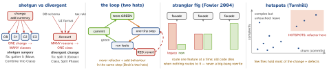

design · folio
In one line: Refactoring (Fowler): “a change made to the internal structure of software to make it easier to understand and cheaper to modify without changing its observable behaviour”. A smell is a surface symptom that suggests a deeper problem — name the smell, name the refactoring, and keep behaviour pinned: tests first, tiny steps, commit each green step.
Download PDF Print view LaTeX source


| Smell | Tell-tale | Refactoring (Fowler 2nd ed.) · Swift form |
|---|---|---|
| Long Function | scroll to read; comments label the blocks | Extract Function, Decompose Conditional, Split Phase |
| Large Class / god object | many fields, many reasons to change; Massive VC | Extract Class → ViewModel, data source, Coordinator |
| Long Parameter List | 5+ args; the same group repeats | Introduce Parameter Object, Preserve Whole Object; a struct with defaults |
| Data Clumps | lat, lon, accuracy always travel together | Extract Class / Parameter Object — the clump is a type |
| Primitive Obsession | String email, Double money, Int status | Replace Primitive with Object: struct Email validating in init?, Decimal, enum |
| Feature Envy | a method uses another object’s data more than its own | Move Function to the data (tell, don’t ask) |
| Divergent Change | ONE class edited for MANY unrelated reasons | Extract Class, Split Phase (SRP) |
| Shotgun Surgery | ONE change edits MANY classes | Move Function/Field, Combine Functions into Class, Inline Class |
| Repeated Switches | the same switch type in many places | Replace Conditional with Polymorphism — or an enum + exhaustive switch (compiler finds every site) |
| Speculative Generality | protocol with one conformer, unused hooks “for later” | Collapse Hierarchy, Inline Function/Class, Remove Dead Code |
| Message Chains | a.b.c.d — the caller knows the whole path | Hide Delegate (overdone → Middle Man → Remove Middle Man) |
| Temporary Field | an optional that is nil except in one flow | Extract Class; Swift: an enum state with associated values |
| Refused Bequest | subclass ignores or crashes on what it inherits | Replace Subclass/Superclass with Delegate (compose), Push Down |
| Comments (deodorant) | a comment explains what the code does | Extract Function with that name, Rename |
The discipline No tests → write characterization tests first (Feathers: legacy = code without tests): pin today’s behaviour, bugs included — assert a wrong value, read the actual from the failure, paste it in; snapshot/golden master for big outputs. Then: one tiny behaviour-preserving step → run tests → commit; red → revert, don’t debug. Two hats (Beck): refactoring or adding behaviour, never both in one step/PR. Preparatory refactoring: “make the change easy (warning: this may be hard), then make the easy change” (Beck). Prefer IDE refactors (Xcode Rename, Extract to Method) — mechanical = safe. Public interface: parallel change (expand → migrate callers → contract), with @available(*, deprecated, renamed:).
Big rewrites — strangler fig Put a facade/router in front; send one feature at a time to the new code; the legacy shrinks until nothing routes to it. iOS: new SwiftUI screens in UIHostingController inside the UIKit app; a protocol in front of the old service with a feature flag choosing the implementation (branch by abstraction). Every step ships and can be rolled back. The warning against big-bang: Spolsky, “Things You Should Never Do” (Netscape’s rewrite).
// BEFORE: primitive obsession + long list + type code
func book(from: String, to: String, date: Date,
adults: Int, kids: Int, cabin: Int, email: String)
// AFTER: value object, parameter object, enum
struct Email { let raw: String
init?(_ s: String) { guard s.contains("@") else { return nil }
raw = s } }
enum Cabin { case economy, business, first }
struct Trip { var from, to: Airport; var date: Date
var adults = 1, kids = 0; var cabin = Cabin.economy }
func book(_ trip: Trip, contact: Email)Remember Name the smell, name the refactoring · pin behaviour first · one step, green, commit · strangle, don’t rewrite · refactor the hotspots.
When NOT to refactor Code nobody needs to change (ugly but stable: leave it — refactor where you work; boy-scout rule applies to the area you touch) · no tests and no cheap way to get them · right before a release · a published API without a deprecation path · taste alone. A refactoring needs a payoff: the next feature, a bug class, onboarding.
Measure, don’t guess Cyclomatic complexity (McCabe, 1976) = E - N + 2P on the control-flow graph ≈ 1 + decision points (if, guard, loops, case, &&, ||, ?:, catch); = the minimum number of test paths. McCabe’s limit 10; SwiftLint cyclomatic_complexity warns at 10, errors at 20. Cognitive complexity (SonarSource) also penalises nesting. Hotspots (Tornhill, Your Code as a Crime Scene): change frequency from git log × complexity — refactor the top-right, not the whole codebase. Also: SwiftLint type_body_length, function_parameter_count; coverage at the change point.
Traps
- Shotgun surgery (one change, many classes) ≠ divergent change (one class, many reasons) — opposites.
- Refactoring without tests is just changing code; “refactor” a feature in = two hats.
- In Swift a switch over an
enumis not the smell — a switch over a type code (Int,String) repeated everywhere is. - “Moved the VC’s code into a Manager” relocated the smell (god object), not fixed it.